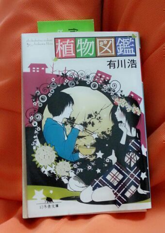

| 2013/06 13 Thu | ろってぃ−ブログ一緒に見てみよ うよ(・ω・) はいっ！わかった★ |
H i ☆
ろろろろ ろってぃーです(・ω・)ムニャ.

今は これから出ていく準備を
していまぁ〜す //
今日は お天気が優れない様で...
皆、お傘は 忘れてないかなー？
まひろは、
いつ置き忘れても盗まれても
風でとんでいっちゃっても
いい様に透明のお傘が
LOVEなのであります。
ちょっちまってぃ.
今から駅向かう。
・・・・
それにしても
風強いねぇ〜(*´ω｀*)
家出た瞬間 髪ぼさ子だよ。やったー笑
パンツが足に引っ付いてるよ。
ではでは
いくつか質問返しを
しちゃいま〜す。ぐへへ
☆どの植物図鑑？
★ この植物図鑑だわわ。

☆最近はどんな曲 聞く？歌う？
★『あなたのキスを数えましょう』
を最近はカラオケで毎回歌っちゃう(^^)
あと、相変わらず
安室奈美恵さん、ドリカムさん、
家入レオさん、福原美穂さん等々 ！
☆Rottyのストレス解消法って何ですか？
★歌う、食べる、走る、芸人さん(^^)
☆前髪伸ばしてんの〜？
★いえす。 はっやっく
伸びれぃ 伸びれぃ) ) )
☆肩こりは大丈夫ですか？
★相変わらずだお(・ω・)
こりほぐしてよ？
☆その四人でカラオケ行った場合
誰が一番マイクもってんの？
★まひろ、あみ、ちはるで
ローテーション ！
あすかはひたすら聞いてたよ(´∇｀)
☆しゃぶしゃぶ は
ポン酢派？胡麻だれ派？ミックス派？
★胡麻だれも大好きなんだけどなあ
どっちか選ぶなら ポン酢にします^^
☆ろってぃ− 誕生日祝ってぇ〜♪
★お誕生日おめでとうございますん(*´∇｀*)
いい年にしてください。
まひろと思い出つくりましょう。ちゃー
☆マトン(羊肉)って肉 食べたこたる？
★マトンマトンマトン・・・
そりゃあねぇ〜
ありませんでかなぁー ！！*/´ω`*)/
☆どのジャンルの料理が1番好き？
和食、中華、洋食、イタリアン、アジアン...その他。
★何でも大好きだけど
結局 自分は
和食が一番好きなんだよ (⌒‐⌒)
☆乃木メンでカラオケ行くと
やっぱ乃木曲は入れるの？
★とりあえず１曲だけ
入れて歌うのがいつものパターン 笑
ちなみに、こないだは 『13金』
☆ろってぃ−の得意なダンスのジャンルは？
★ダンスやってた当時はねえ、
やっぱヒップホップだよ！
ハウスとかロックも経験はしてんだけどねぇ〜(*´ω｀*)
ではでは
皆さん、足元には十分注意して
お手てを繋いで歩きましょう (・∨・)
ろってぃーでした。のし♪
★お誕生日おめでとうございますん(*´∇｀*)
いい年にしてください。
まひろと思い出つくりましょう。ちゃー
☆マトン(羊肉)って肉 食べたこたる？
★マトンマトンマトン・・・
そりゃあねぇ〜
ありませんでかなぁー ！！*/´ω`*)/
☆どのジャンルの料理が1番好き？
和食、中華、洋食、イタリアン、アジアン...その他。
★何でも大好きだけど
結局 自分は
和食が一番好きなんだよ (⌒‐⌒)
☆乃木メンでカラオケ行くと
やっぱ乃木曲は入れるの？
★とりあえず１曲だけ
入れて歌うのがいつものパターン 笑
ちなみに、こないだは 『13金』
☆ろってぃ−の得意なダンスのジャンルは？
★ダンスやってた当時はねえ、
やっぱヒップホップだよ！
ハウスとかロックも経験はしてんだけどねぇ〜(*´ω｀*)
ではでは
皆さん、足元には十分注意して
お手てを繋いで歩きましょう (・∨・)
ろってぃーでした。のし♪
コメント(153)
2013/06/13 14:00